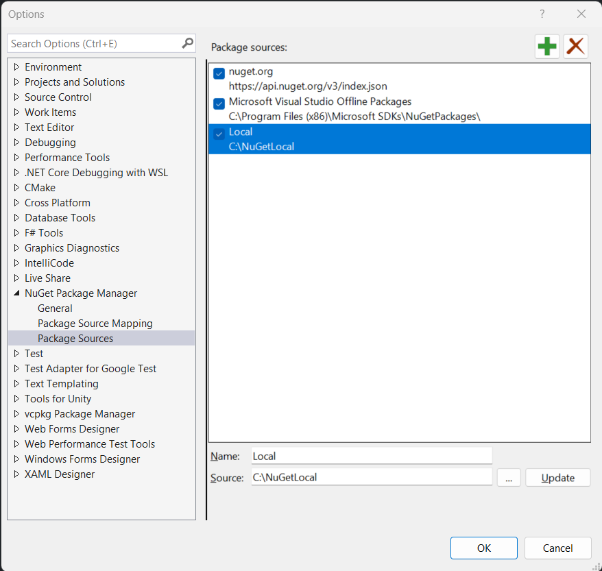
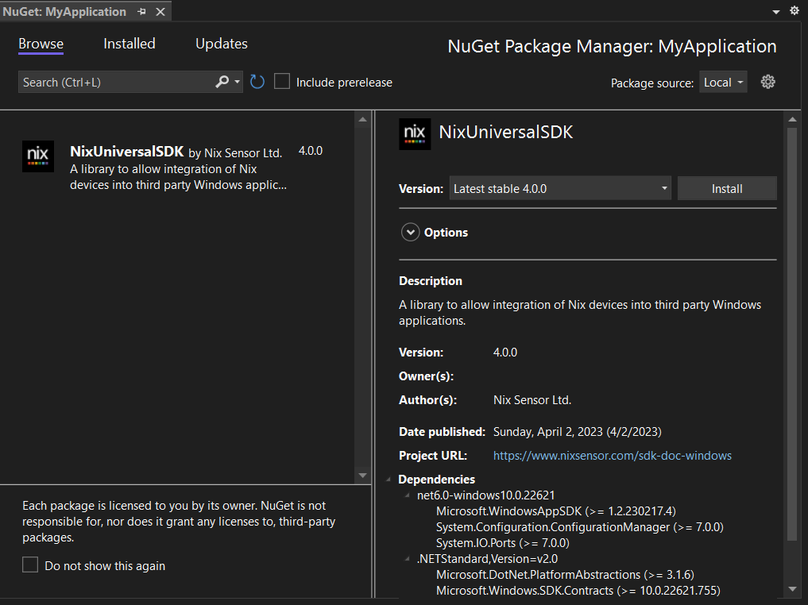

Adding to Your Visual Studio Project
The Nix Universal SDK is provided as a NuGet package, which allows for easier dependency resolution. This example outlines how to install the package in a local NuGet feed.
Creating a local NuGet feed
- Download the NuGet executable here.
- Create a local folder on your PC, for example
C:\NuGetLocal - Add the
NixUniversalSDKNuGet package file to the local feed from the command line using thenuget addcommand:
nuget add <PATH_TO_NUPKG> -Source <PATH_TO_LOCAL_FEED>
For example, using nuget.exe, NixUniversalSDK.4.1.2.nupkg in the local folder, and C:\NuGetLocal as the local feed path:
./nuget add NixUniversalSDK.4.1.2.nupkg -Source C:\NuGetLocal
- If successful, the NuGet executable will display a message indicating the same. For example:
Installed NixUniversalSDK 4.1.2 from <SOURCE> with content hash <HASH>
Successfully added package '.\NixUniversalSDK.4.1.2.nupkg' to feed 'C:\NuGetLocal'.
Adding the local NuGet feed to Visual Studio
- In Visual Studio, navigate to
Tools->NuGet Package Manager->Package Manager Settings. - Select
Package Sourcesin the menu on the left hand side. - Add a new source by clicking on the
+icon at the top right. - Enter a name for your local feed (e.g.
Local), and enter the path selected in step 2 above (e.g.C:\NuGetLocal). - Click
OKto add the local feed to your package sources list.

Updating the local NuGet feed
New versions of the Nix Universal SDK will be delivered as new nupkg downloads. To use the updated packages, install the new package version from the command line using the nuget add command as outlined in step 3 above.
Adding to your Visual Studio project
- In Visual Studio, right-click on your project and select
Manage NuGet Packages. - Select your local feed (e.g.
Local) as thePackage source, located at the top right of the NuGet Package Manager. - Select the
Browsetab in the NuGet Package Manager. TheNixUniversalSDKpackage will show up in the list of available packages. - Click on
Installto add to your project.

- If your Windows application is a packaged UWP or WinUI app, it is necessary to add Bluetooth and serial device capabilities to the App package manifest.
- If your application already runs with 'full trust', or is unpackaged, this step is not necessary
- An overview of declaring device capabilities in an app manifest is provided by Microsoft here
- The specific capabilities required by the Nix Universal SDK are listed below
<Capabilities>
<!-- Existing capabilities here -->
<!-- ... -->
<!-- Nix required capabilities -->
<DeviceCapability Name="bluetooth.genericAttributeProfile">
<Device Id="any">
<Function Type="name:00001800-0000-1000-8000-00805f9b34fb"/>
<Function Type="name:00001801-0000-1000-8000-00805f9b34fb"/>
<Function Type="name:0000180a-0000-1000-8000-00805f9b34fb"/>
<Function Type="name:0000180f-0000-1000-8000-00805f9b34fb"/>
<Function Type="name:0000fe59-0000-1000-8000-00805f9b34fb"/>
<Function Type="name:bebc4000-c4ba-e4a6-4422-dbb176d3a537"/>
<Function Type="name:72d51000-b0da-4368-952f-dd2a64db5b61"/>
</Device>
</DeviceCapability>
<DeviceCapability Name="serialcommunication">
<Device Id="any">
<Function Type="name:serialPort"/>
</Device>
</DeviceCapability>
</Capabilities>
Advanced options
The SDK package could also be hosted on a private networked NuGet feed, though this is beyond the scope of this example. For further examples, refer to online documentation here.